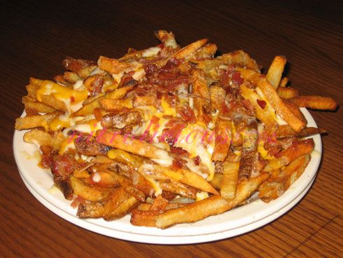

Cheese Fries

Cholesterol Attack!
My first love in life, and hopefully one of yours,
brought to you by national heroes Outback Steakhouse
and... Texas Roadhouse? Yeah, I guess.
Ingredients
- 2 MEDIUM Russet Potatoes
- 6 Cups Vegetable Oil ; for fries
- 1 Tablespoon Salt
- 1 teaspoon Garlic Powder
- 3/4 teaspoon ground black powder
- 1/2 teaspoon Onion Powder
- 1/8 teaspoon ground thyme
- 1 cup shredded monteray jack
- 1 cup shredded cheddar
- 1 slice Bacon Cooked, crumbled
Steps
- For the Aussie Chips: Preheat oil to 375(F) degrees in a deep fryer.
- Cut potatoes into french fry slices using a vegetable slicer or mandolin. Its important to use a gadget for the slicing so that the fries will all be the same thickness, and will cook evenly. Submerge all of the sliced potatoes in a large bowl fill with cold water for 30 minutes.
- Combine all of the seasoning ingredients in a small bowl and set aside.
- Remove potato slices from the water and onto a clean towel. Blot dry.
- Fry potato slices for 8 to 12 minutes in hot oil until light brown. Drain fries on a rack or paper towels and sprinkle with some of the seasoning. Pile the fries on a plate and serve with ranch dressing on the side, if desired.
- For the Aussie Cheese Fries: Prepare the clone for the Aussie Chips and arrange the seasoned fries on an oven-safe plate. Preheat oven to 400 degrees.
- Mix the cheeses together and sprinkle the blend over the fries. Crumble the bacon and sprinkle it over the cheese. Bake the plate for 4 to 5 minutes in the hot oven, until cheese is melted. Serve with ranch dressing on the side.